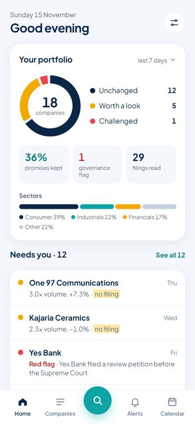
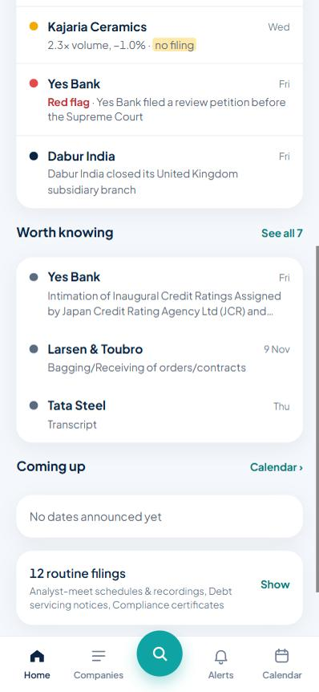
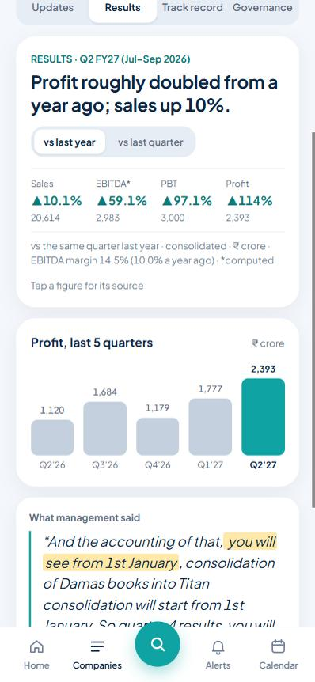
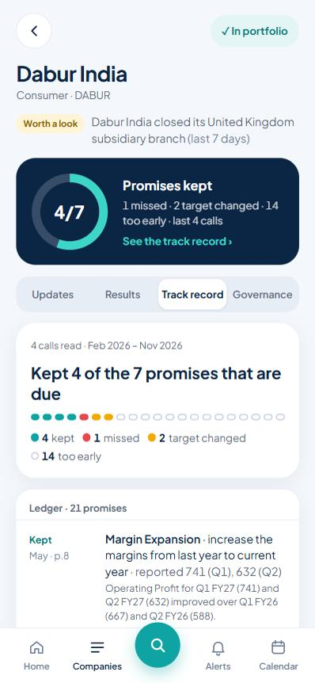
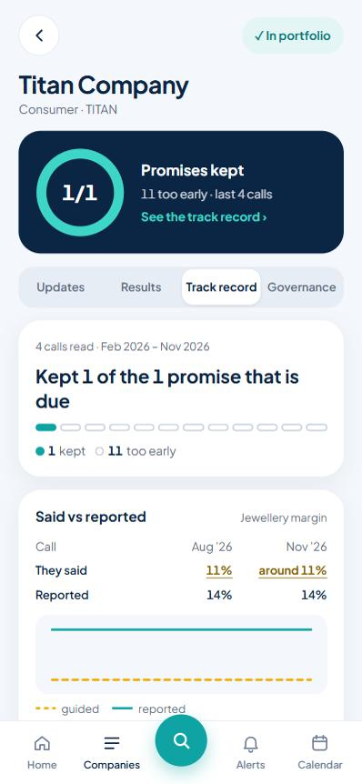
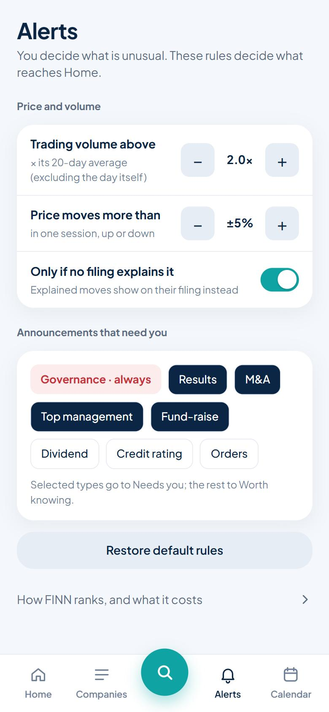

A calm, mobile-first intelligence layer for a long-term, governance-first investment team. This document explains what FINN is, who it is for, and every important decision behind it, with the trade-offs.
Investors don’t lack information; they lack filtering. FINN watches a portfolio’s exchange filings, prices and earnings calls, and turns them into two things an investor can act on in under a minute:
Every filing across the portfolio, classified and ranked by how much it could change the thesis. Governance is always first; the investor’s own price and volume rules come next; routine paperwork folds into one line. It ends with “You’re caught up”. Real phone notifications for red flags, rule hits, and a morning and evening brief.
For any NSE company: FINN reads the last 4 earnings-call transcripts, lists every checkable promise with its exact quote and page, and checks each against reported numbers: KeptMissedTarget changedWent silent · Too early.
The two modes meet on the results card. When results land, FINN shows them against management’s own word, not just against last quarter.
| Idea | What it means in the product |
|---|---|
| An inbox you can finish | Home is finite and ends with “You’re caught up · next brief 08:30”. On a quiet day it says so plainly, instead of showing an empty grey screen or inventing news. |
| Governance can’t be buried | Auditor changes, senior exits, regulatory orders, pledges and guarantees are always “needs you” and are never collapsed. This mirrors ENAM’s focus on management quality. |
| Models read words; code does maths and owns quotes | No model generates a number. Growth, EBITDA and margins are computed in code. A promise is shown only if code finds its quote word-for-word in the transcript, and the page shown is the page code found. |
The brief never names the user, so we inferred one from the evidence: “a small team makes high-conviction decisions”, “an intelligence layer for how we invest”, and vocabulary like guidance, concalls and pledging. Together these point to a professional, long-term, fundamental buy-side investor. So FINN does not simplify the finance. It cuts time and noise.
3–8 years · covers 15–20 companies · owns each thesis
Needs: completeness, depth on demand, a source for every number.
Fears: missing a material filing, or passing a wrong AI number to a partner.
20+ years · makes the allocation calls · mostly on a phone
Needs: one screen that answers “do I need to act?”, with governance first.
Fears: a red flag buried under routine paperwork.
The tension → the principle. The analyst wants completeness and the partner wants brevity, in the same product. So every item has three depths: headline (5 seconds) → summary (30 seconds) → source document and page (trust).
Each workflow on the brief’s menu was scored on pain, room for an original answer, how easy it is to justify, and build risk. The brief says to “nail one or two workflows”, so we went deep on a Smart Digest (Push) and Promised vs. Delivered (Pull), the item it calls “the kind of thing we value most”.
| Investor problem | Side | FINN’s answer |
|---|---|---|
| Filing overload: most filings are paperwork | Push | Rules-first classification; routine folded into one line; finite Home |
| Titles lie (“General Updates”, “Outcome of Board Meeting”) | Push | Classify on the exchange’s own summary of the document, not the title |
| Results-season crunch | Push | Results card: Sales, EBITDA, PBT, PAT vs last quarter and last year, computed by code |
| Price moves with no reason | Push | Your own volume and price rules; a move is “explained” if a filing sits behind it |
| Alert fatigue | Push | The user sets the thresholds; notifications only for red flags, rule hits and two briefs a day |
| No memory across quarters; quiet guidance drift | Pull | Promise ledger over 4 calls; said-vs-reported table; “Target changed” and “Went silent” verdicts |
| Trust in AI numbers | Both | Evidence sheet on every number and quote: document, page, exact words, how it was produced |
| Meeting prep in 15 minutes | Pull | “Questions to ask management”, drafted from missed and changed promises |
| “Who is this new CFO?” | Push | Not built yet (see “Left out”) |






| Decision | Why | Trade-off we accepted |
|---|---|---|
| A finished briefing plus one focused research instrument | The investor picks a ticker, a window and thresholds; FINN returns a finished, structured answer. Structured output can be verified and cited line by line. | Open-ended questions are a next step, scoped to one quote at a time. |
| Editable portfolio, works for any NSE ticker | Ships with a demo portfolio; judges can add any company or remove one, with Undo and “reset to demo”. A new ticker is built live in ~5–8 s and then joins the scheduled refresh. | The portfolio lives in one browser (no accounts). |
| Rank by thesis impact, not by time | The partner’s question is about companies, not filings. Category weight + governance + the user’s own rules gives a deterministic, explainable order. | Hand-tuned weights; a learning ranker would need usage data we don’t have. |
| Thesis board, not a feed | Counting companies (12 unchanged · 5 worth a look · 1 challenged) makes silence read as “checked”, not as “broken”. | One company’s state is a summary; detail is a tap away. |
| Default window “since you last looked” | The brief suggests 24 hours, but 24 hours is empty at weekends and repeats news for daily users. 24 h, 7 d and 30 d are one tap away and can be made the default. | A first-time user sees the last 7 days. |
| Price moves only when no filing explains them | A long-term investor doesn’t need “stock fell 3%”. A large move with no filing behind it is the real signal (“Market moved, business didn’t”). | End-of-day data only, so alerts follow the close, not intraday. |
| Primary sources only, and code owns the evidence | The brief’s discipline for Pull. Quotes must be found word-for-word on the cited page; promises that can’t be found are dropped, not shown. | Some genuine promises are lost when the PDF text is messy. We prefer losing one to showing an invented one. |
| No login; portfolio saved in the browser | Judges can try it in 10 seconds. Shared data is stored once per ticker on the server, so there are no accounts and no duplicate work. | Not multi-device yet; a phone’s push subscription carries its own portfolio and rules. |
| Installable web app with real push | One codebase, an instant link, an app icon, and notifications on Android and iPhone (after Add to Home Screen, which is Apple’s rule). | On iPhone, push needs the install step first. FINN shows the two taps. |
| Calm notifications | Right away only for governance red flags, the user’s own rules and their chosen categories; everything else waits for the 08:30 and evening brief. Routine never notifies. | Delivery follows the 5-times-a-weekday refresh, not the second a filing lands. |
From docs/02_BUILD_DECISIONS.md, written before any code: each idea was scored on why it stands out and its cost to build, then marked core, spice or stretch.
| Mechanism | What it does in FINN | Why we chose it |
|---|---|---|
| An inbox you can finish | Home is finite: what needs you, what is worth knowing, routine folded, then “You’re caught up · next brief 08:30”. | The opposite of an endless feed; answers “show only what’s important”. |
| Explainable ranking | Three tiers (needs you / worth knowing / routine), each card with its reason, e.g. the rule that fired: “20-day avg × 3.0 · your rule × 2.0”. | Ranking you can check is ranking you can trust; judgment is what is graded. |
| Governance radar | Auditor, senior exits, regulatory, pledge tiles on every company; governance events always top-ranked and never collapsed. | Encodes ENAM’s focus on management quality. |
| Explained vs unexplained moves | A price or volume move is matched to that day’s filings; only unexplained ones alert: “Market moved, business didn’t.” | Turns a commodity price alert into a signal a long-term investor needs. |
| Three-depth cards | Headline → summary → source, with the original PDF one tap away. | Serves the partner (5 s) and the analyst (30 s) with one design. |
| Promise ledger with verdicts | Kept · Missed · Target changed · Went silent · Too early, each with quote, page and reported figure. | “Went silent” (a promise that quietly disappears) is what analysts value most and summaries miss; “Too early” is more honest than guessing mid-year. |
| Delivery score as a count | “Kept 4 of 7 promises that are due”, never an opaque 0–100 score; every dot taps through to its row. | A crisp headline that stays fully traceable. |
| Results vs promises bridge | The results view shows management’s own guidance next to the numbers (“Against their word”). | Connects Push and Pull into one memory. |
| Visible pipeline progress | “Found 4 transcripts → Reading Aug 2026 call (18 pages) · 8 promises, every quote checked → Checking…” | Turns waiting into trust, and shows the architecture. |
| Cost receipt | Each track record lists every step, the model that answered and the tokens used. | Makes the efficiency bonus visible instead of claimed. |
| Evidence sheet | Any number or quote opens the document, page, exact words and how it was produced. | “Every claim is traceable”, in one tap. |
| Questions to ask management | Drafted from missed, changed and silent promises. | Pre-meeting prep in a minute, cheap once the ledger exists. |
| Decision | Why |
|---|---|
| NSE announcements, not BSE | We tested both from the cloud: BSE’s API returns 403 to cloud servers, even in Mumbai; NSE works and adds a free text summary of each document, which is our cheapest classification signal. |
| Reported numbers from Screener’s standardised table | Deterministic, consolidated when available, and the same for every NSE ticker. A model never extracts a number. The results PDF is linked from every figure. |
| Transcripts discovered via Screener, read page by page | Works for any ticker. Code extracts page text, so quotes and page numbers can be checked. |
| One key: the NSE symbol | NSE, Yahoo (SYMBOL.NS) and Screener all use it, so no ISIN or BSE-code mapping is needed and “add any company” just works. |
| Demo portfolio chosen by data | A scan of ~50 candidates’ last-30-day filings picked the set covering the most event types (30 of 31): 14 liquid large caps for reliable data + 4 ENAM-like mid caps (Astral, Kajaria, V-Guard, Symphony) for relevance. |
| Decision | Why |
|---|---|
| Main model: GLM 5.3 flash (Hyde Inference); fallback: Gemini flash-lite / flash | All free tiers. GLM has higher limits; Gemini takes over automatically on any failure or timeout, so a quota error never stops a demo. Running GLM with low reasoning effort cut a step from ~40 s to under 10 s with the same JSON. |
| One short call per step | A track record is discover → read call ×4 → judge, each a separate request. That gives the user real progress (“Reading Aug 2026 call…”), fits serverless time limits, and resumes where it stopped. |
| Cache everything immutable | Filings and transcripts never change. A classification or extraction is stored once, keyed by filing ID or URL hash, and reused by every user. The second person to open a track record gets it instantly. |
| Cost receipt in the app | Every track record lists each step, the model that answered it and the tokens used. Efficiency is visible instead of claimed. |
| Guardrails in code, not in the prompt alone | Prompts limit the model to the supplied text. Code then drops unverified quotes, and stops “went silent” being claimed about the latest call (it can’t have gone silent yet). |
Why no database: everything FINN stores is a document looked up by key (a company, a ledger, a filing), never queried relationally. Blob is native to Vercel and needs no other account. Why precompute Push: filings and end-of-day prices are batch by nature, so Home never waits on a live scrape and the demo runs even if a source is slow.
| Detail | What FINN does |
|---|---|
| EBITDA isn’t printed in Indian results | Computed as PBT + finance cost + depreciation − other income, labelled “computed”, with the sum shown in the evidence sheet. |
| Banks and NBFCs | No EBITDA (not meaningful for lenders), and FINN says so instead of showing a meaningless number. |
| Indian fiscal quarters | “Q2 FY27 (Jul–Sep 2026)”: the label plus the months, so there’s no doubt. |
| Time | IST everywhere; windows are the investor’s hours; “Fri close” at weekends. |
| Split and bonus days | Never fire a price or volume alert; the move is mechanical. |
| “Usual volume” | 20-day average, excluding the day itself; the rule that fired is shown on the alert. |
| Consolidated vs standalone | Consolidated first, standalone if empty, always labelled. |
| Auditor change ≠ red flag | A routine rotation is “worth checking”; only a resignation-type event marks a company “challenged”. |
| Missing transcripts | Said plainly (“slides only for recent calls”), never filled with guesses; failed reads can be retried. |
| Round | What changed and why |
|---|---|
| v1–v2 | “Annotated ledger”: ink on paper, IBM Plex, colour only for meaning. Navigation moved to company-first after review. |
| v3 | Thesis board first (“1 challenged · 2 worth a look · 15 unchanged”), rule alerts on top, finite ending. Shipped, then judged “generic” and an empty grey screen on quiet days. |
| Clear Day | Three new directions were drawn (consumer-clear, pro terminal, morning paper); the user picked a hybrid. Navy and teal on ice white, a portfolio ring that is alive every day, a navy “promises kept” hero, said-vs-reported from the terminal direction and a pull-quote from the paper direction. |
| Declutter | Phone testing showed too much text. Cards went from 4–5 text levels to 2. The brief became one line per company, routine filings kept their compact list, sources moved behind a tap, and pull-to-refresh was added. |
Rules kept through every round: buttons ≥ 44 px; every colour signal also has a word or an arrow; light and dark themes; designed at 375 px first; numbers in tabular figures.
| Left out | Why |
|---|---|
| Intraday ticks, technical charts, trading | A long-term fundamental investor decides on the business, not the chart. FINN is an intelligence layer; decisions stay with people. |
| News and broker notes | Banned for Pull by the brief; for Push they add noise, not signal. |
| Business / balance-sheet / cash snapshots, bull vs bear | Screener already does snapshots well. We spent the time on the item the brief values most: promised vs. delivered. |
| Annual reports | Transcripts carry the guidance; annual reports are the next source to add (cash quality, related-party notes). |
| Accounts / login | Judges must be able to try it instantly on a phone. |
FINN was built in three days, working with Claude Code as a coding agent: product discovery and scoping first (docs/01_FINAL_SCOPE.md), every decision written down with alternatives (docs/02_BUILD_DECISIONS.md), a data spike before any app code (docs/03_DATA_SPIKE.md), then design rounds on a canvas (docs/04_DESIGN.md), and a deployed build tested on a real phone after each round. The full AI build history is shared alongside this document.